Estimamos cuántos metros se ve en la niebla a partir de una sola imagen, y comparamos ResNet-50 con DeiT-S en igualdad de condiciones.
Nelson Fuentes
Fernando Guerrero
¿Cuántos metros se ve?
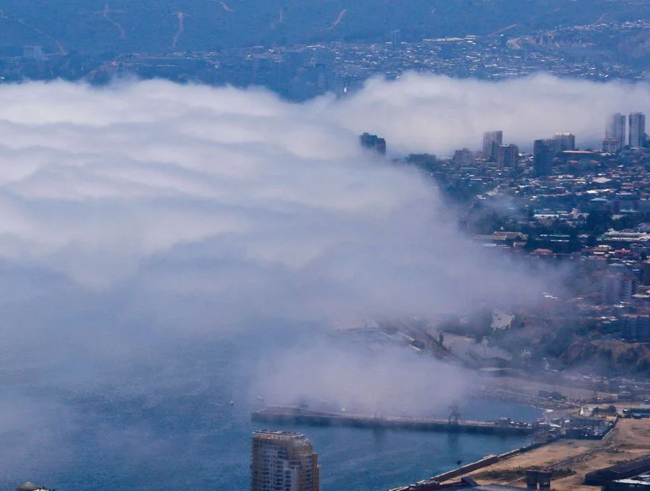
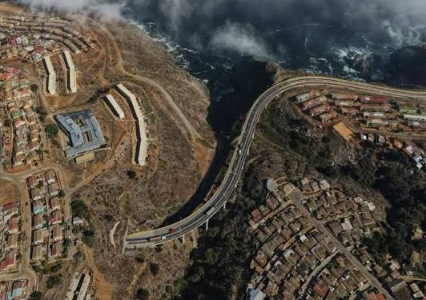
Camino La Pólvora- La camanchaca entra desde el mar y puede bajar la visibilidad a decenas de metros.
- Si veo menos que lo que necesito para frenar, no alcanzo a detenerme.
Distancia para detenerse, con pavimento mojado
Qué cambió desde el avance
De β a metros de visibilidad
- V = 2,996 / β: la distancia donde el contraste cae al 5 %, según la OMM.
- En el avance usamos 2 %. Eso da una visibilidad 31 % mayor, más optimista de lo que es.
- En Cityscapes y HazeRD son metros reales. En RESIDE son equivalentes, porque su profundidad es estimada.
Bandas y velocidad máxima para alcanzar a frenar
36 542 imágenes de 5 292 escenas
| Fuente | Etiqueta | Train | Val | Test | Externo |
|---|---|---|---|---|---|
| CS-Fog (propia) | métrica | 5 032 | 918 | 1 000 | |
| Foggy Cityscapes | métrica | 12 123 | 1 377 | 1 500 | |
| RESIDE-OTS | equivalente | 10 087 | 2 170 | 2 170 | |
| HazeRD | métrica | 75 | |||
| O-HAZE | sin etiqueta | 90 | |||
| Total | 27 242 | 4 465 | 4 670 | 165 |
Separamos por escena para que una misma calle no quede en train y en test. Los externos no se usan para entrenar ni para elegir el modelo.
Así se ve cada banda
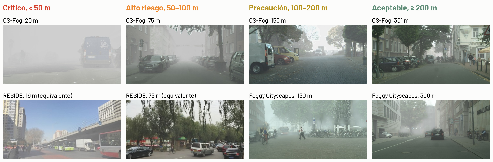
En RESIDE la niebla casi no se nota aunque la etiqueta diga 19 m: su profundidad es estimada, así que sus metros son equivalentes, no reales.
El riesgo: que el dataset delate la banda
- Con solo RESIDE y Foggy, basta reconocer el dataset para acertar la banda. CS-Fog pone las cuatro bandas en las mismas calles.
- Toda la niebla con etiqueta es sintética y pareja; la camanchaca real no lo es.
Misma receta para los dos modelos
ResNet-50
DeiT-S
- Misma salida: la visibilidad, en escala logarítmica, y la banda
- Mismos pasos y aumentación, sin tocar color ni contraste
- Mismo barrido de LR y 3 semillas por modelo
- Elegimos solo con validación; test se evaluó una sola vez
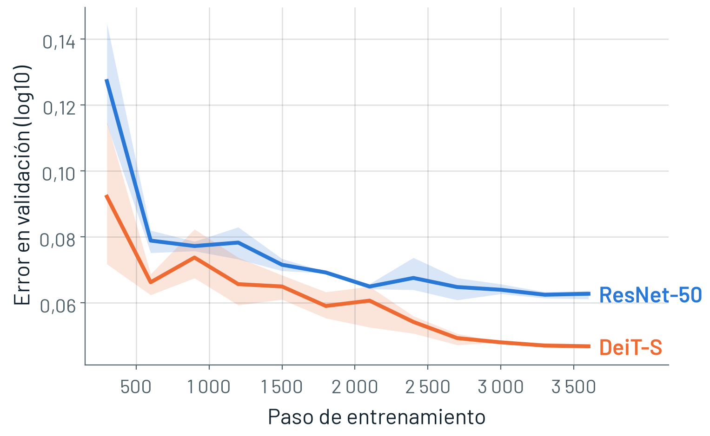
DeiT-S se equivoca menos que ResNet-50
| Test | Error log10 [IC 95 %] | Error mediano | F1 bandas | Falso seguro | Error medio |
|---|---|---|---|---|---|
| DeiT-S | 0,046 [0,040 a 0,054] | 6,5 % | 0,915 | 0,60 % | 15 m |
| ResNet-50 | 0,062 [0,059 a 0,067] | 10,9 % | 0,895 | 0,86 % | 24 m |
| Sin deep learning | 0,137 [0,127 a 0,144] | 21,3 % | 0,736 | 3,9 % | 51 m |
| Media por fuente | 0,251 [0,228 a 0,269] | 50,0 % | 0,442 | 16,3 % | 97 m |
Sobre las mismas escenas, DeiT-S tiene 0,016 [0,012 a 0,019] menos de error. El intervalo no incluye el cero, y esa regla la fijamos antes de mirar test.
4 670 imágenes de test, promedio de 3 semillas. Falso seguro: menos de 100 m reales, predicho como 100 m o más.
Cuando se equivoca, es por una banda
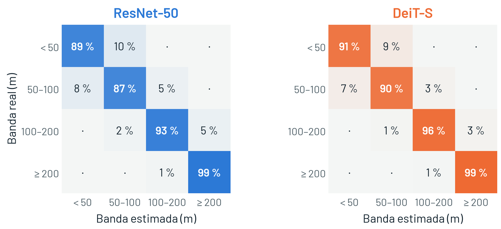
- Casi todos los errores caen en la banda vecina. Casi nunca salta dos bandas.
- DeiT-S acierta la banda el 91, 90, 96 y 99 % de las veces; ResNet-50, el 89, 87, 93 y 99 %.
- Decir que se ve bien cuando no, el error peligroso, pasa en el 0,6 % de los casos con DeiT-S.
Muy bien en su dominio, mal fuera de él
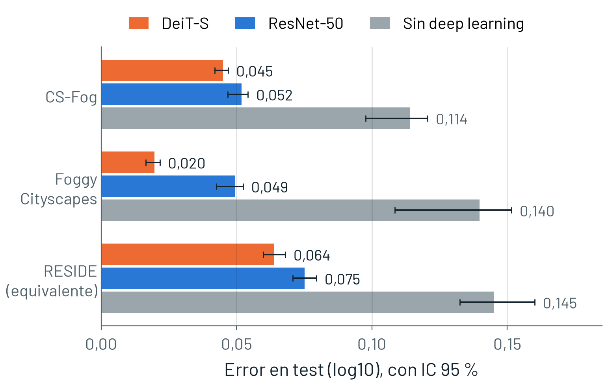
DeiT-S gana en los tres datasets. La mayor distancia está en Foggy Cityscapes: 0,020 contra 0,050.
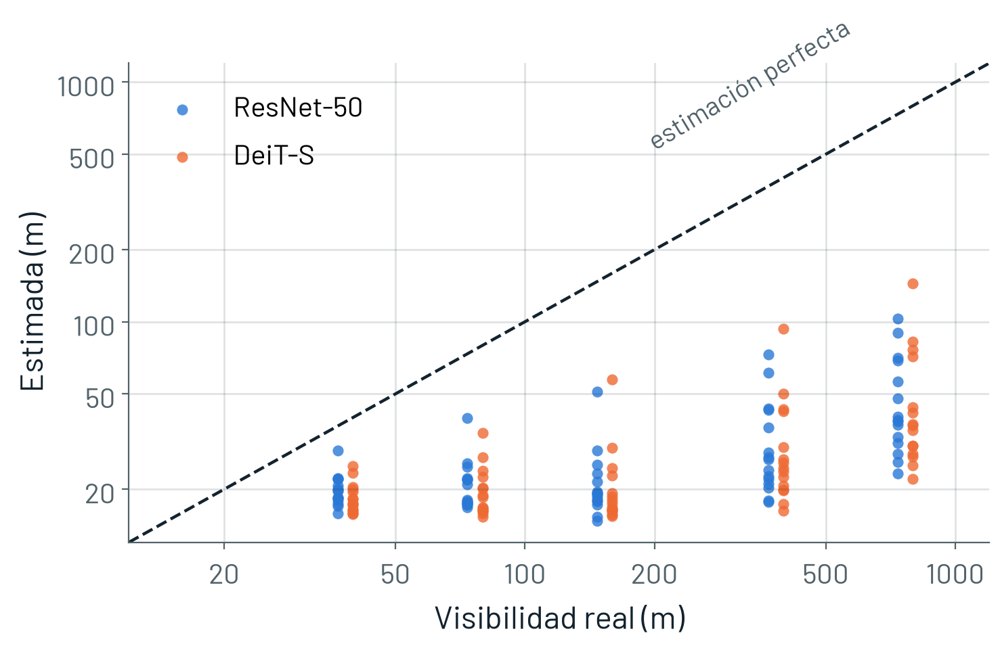
En HazeRD ambos subestiman unas 7 veces. En O-HAZE, con niebla real, el 99 % de las veces dan menos visibilidad a la foto con niebla que a la limpia.
Aciertos y errores
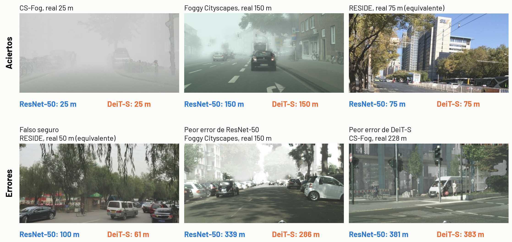
¿Miran la niebla o reconocen el dataset?
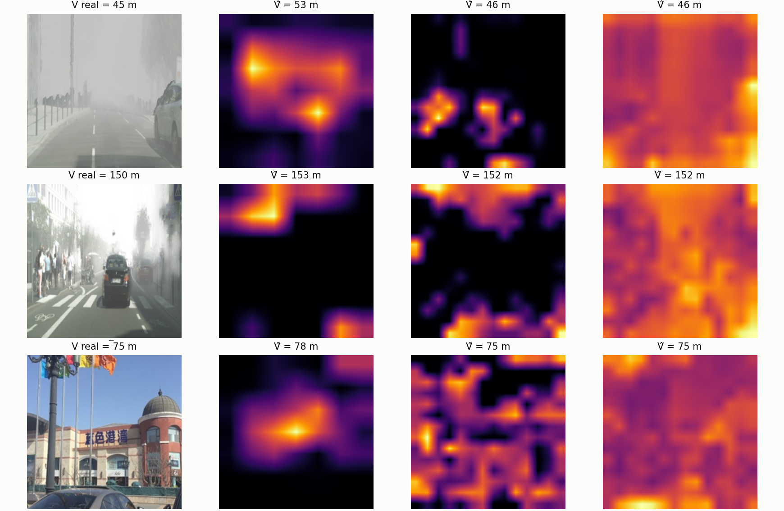
ResNet-50 busca la niebla en lo lejano y la nitidez en lo cercano, como dice la física. DeiT-S reparte más su atención.
Si hacemos la niebla pareja, sin profundidad, DeiT-S cambia su estimación ×1,8 y ResNet-50 ×1,4. DeiT-S se apoya más en cómo la niebla aumenta con la distancia.
Sí: un clasificador simple adivina el dataset en el 92 a 96 % de los casos. Pero dentro de cada dataset igual ordenan bien la visibilidad (Spearman 0,92 a 0,99).
¿Hasta qué distancia se detectan autos?
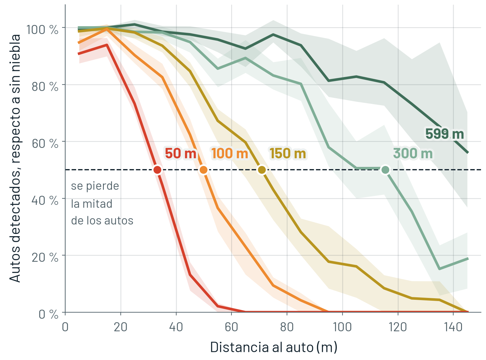
Un detector de autos sobre 475 escenas de Cityscapes, con cinco niveles de niebla.
| Visibilidad | Detecta autos hasta | Frena a tiempo bajo |
|---|---|---|
| 599 m | más de 145 m | más de 91 km/h |
| 300 m | 115 m | 79 km/h |
| 150 m | 71 m | 57 km/h |
| 100 m | 50 m | 44 km/h |
| 50 m | 33 m | 33 km/h |
Los autos dejan de verse antes del límite de visibilidad: entre el 40 y el 66 % de esa distancia. Decidir la velocidad solo con la visibilidad es optimista.
Elegimos DeiT-S: más preciso y más rápido
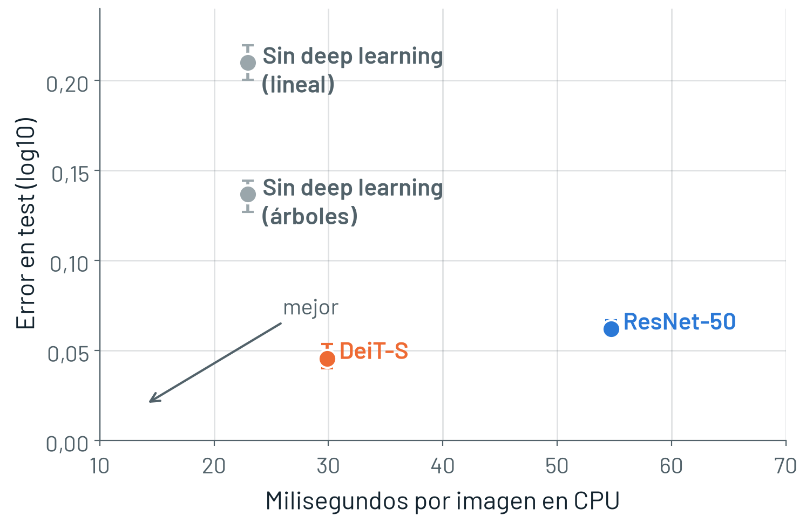
| Por imagen | ResNet-50 | DeiT-S |
|---|---|---|
| CPU | 54,7 ms | 29,9 ms |
| GPU T4 | 7,6 ms | 5,1 ms |
| Operaciones | 4,1 GMAC | 4,6 GMAC |
| Parámetros | 23,5 M | 21,7 M |
Sin GPU, DeiT-S procesa unas 33 imágenes por segundo, casi el doble que ResNet-50, y además se equivoca menos.
Demo en vivo
- Ruta 68 con niebla en los cerros: visibilidad en metros, banda y dónde mira el modelo.
- Una avenida con niebla más densa, para comparar.
- Simular niebla sobre una escena despejada: fijamos la visibilidad y vemos si el modelo la recupera.
Con DeiT-S, el modelo que elegimos, corriendo en CPU. La velocidad que sugiere es solo ilustrativa.
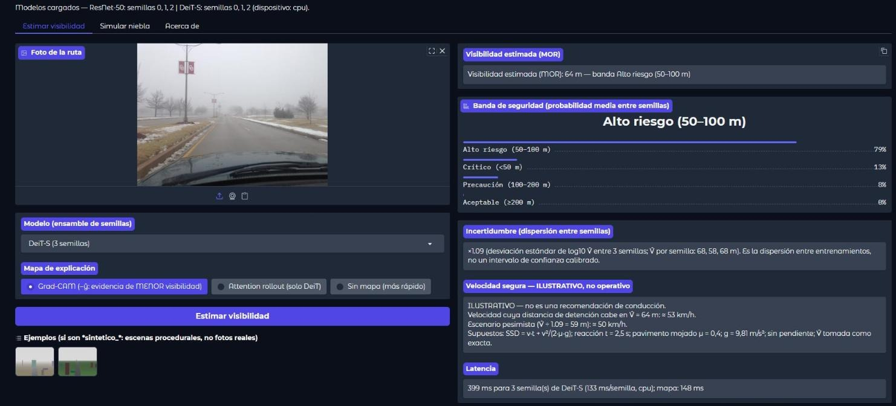
bcdc9cf951e43a8927.gradio.liveFoto de la captura: Ks0stm, CC BY-SA 3.0, vía Wikimedia Commons.
Conclusiones
Lo que mostramos
- DeiT-S estima la visibilidad mejor que ResNet-50, con una diferencia significativa.
- Los dos superan con holgura a un modelo físico sin deep learning.
- Con niebla real ordenan bien qué imagen se ve menos.
Lo que no podemos afirmar
- Que funcione con camanchaca real: no hay datos con visibilidad medida.
- Que generalice: en HazeRD fallan por mucho.
- De noche o con lluvia: no hay datos así.
Lo que sigue
- Una cámara fija en La Pólvora con marcas a distancia conocida.
- Datos con visibilidad medida para ajustar al dominio real.
- Recomendar velocidad según la distancia a la que se detectan los autos.
¿Por qué 5 % y no 2 %?
El 5 % es la definición de la OMM y la que usa Foggy Cityscapes. Con 2 % la visibilidad sale 31 % mayor, más optimista. Cambiar el umbral solo mueve las bandas: el error relativo no cambia.
| Test | F1 con 5 % | F1 con 2 % | Falso seguro 5 % | Falso seguro 2 % |
|---|---|---|---|---|
| DeiT-S | 0,915 | 0,863 | 0,60 % | 5,57 % |
| ResNet-50 | 0,895 | 0,806 | 0,86 % | 5,42 % |
| Sin deep learning | 0,736 | 0,721 | 3,90 % | 5,91 % |
¿El modelo solo aprende qué dataset es?
| Adivinar el dataset | Acierto |
|---|---|
| DeiT-S | 96 % |
| ResNet-50 | 92 % |
| Rasgos físicos | 84 % |
| Al azar | 33 % |
| Banda adivinada solo por el dataset | 43 % |
Sí lo distinguen. Pero saber el dataset solo acierta el 43 % de las bandas, y los modelos son mucho mejores que predecir la media de cada dataset (×1,11 contra ×1,78). Dentro de cada dataset ordenan bien la visibilidad.
¿Por qué DeiT-S y no ViT-B?
Para comparar modelos de tamaño y preentrenamiento parecidos: 21,7 M y 23,5 M parámetros, los dos con ImageNet-1k. En el avance comparamos un ViT-B de 87 M con una ResNet de 25 M, y eso no era justo.
¿Cómo saben que la diferencia es real?
Antes de mirar test decidimos que solo hay diferencia si el intervalo de confianza, calculado remuestreando escenas completas, no incluye el cero. Usamos 3 semillas y test se evaluó una sola vez.
¿En qué datasets es real la diferencia?
| ResNet-50 menos DeiT-S | Error log10 [IC 95 %] | Falso seguro [IC 95 %] | F1 bandas [IC 95 %] |
|---|---|---|---|
| Test completo | +0,016 [0,012 a 0,019] | +0,26 pp [0,06 a 0,51] | −0,021 [−0,027 a −0,012] |
| CS-Fog | +0,007 [0,003 a 0,009] | +0,47 pp [−0,23 a 2,43] | −0,028 [−0,038 a −0,001] |
| Foggy Cityscapes | +0,030 [0,024 a 0,032] | no aplica | −0,010 [−0,013 a −0,002] |
| RESIDE | +0,011 [0,008 a 0,015] | +0,22 pp [0,03 a 0,43] | −0,024 [−0,036 a −0,011] |
| HazeRD | −0,023 [−0,043 a −0,003] | 0 | +0,010 [0 a 0,021] |
Un valor positivo en error significa que DeiT-S es mejor. En HazeRD gana ResNet-50, pero los dos fallan.
¿Cuánto aporta el deep learning?
| Test | Error log10 [IC 95 %] | Error típico | F1 bandas | Falso seguro | Error medio |
|---|---|---|---|---|---|
| DeiT-S | 0,046 [0,040 a 0,054] | ×1,11 | 0,915 | 0,60 % | 15 m |
| ResNet-50 | 0,062 [0,059 a 0,067] | ×1,15 | 0,895 | 0,86 % | 24 m |
| Físico, árboles | 0,137 [0,127 a 0,144] | ×1,37 | 0,736 | 3,9 % | 51 m |
| Físico, lineal | 0,210 [0,200 a 0,220] | ×1,62 | 0,588 | 8,8 % | 74 m |
| Media por dataset | 0,251 [0,228 a 0,269] | ×1,78 | 0,442 | 16,3 % | 97 m |
| Siempre la banda más común | 0,578 [0,436 a 0,693] | ×3,78 | 0,156 | 0 % | 159 m |
Los baselines físicos usan 12 medidas de contraste y del canal oscuro de la imagen.
¿Cómo eligieron el learning rate?
| Modelo | LR | LR cabeza | Error en val | |
|---|---|---|---|---|
| ResNet-50 | 3e-5 | 3e-4 | 0,122 | |
| ResNet-50 | 1e-4 | 1e-3 | 0,089 | |
| ResNet-50 | 3e-4 | 3e-3 | 0,073 | elegido |
| DeiT-S | 3e-5 | 3e-4 | 0,057 | |
| DeiT-S | 1e-4 | 1e-3 | 0,052 | elegido |
| DeiT-S | 3e-4 | 3e-3 | 0,052 |
Misma grilla y mismos pasos para los dos, eligiendo solo con validación. Para ResNet-50 ganó el LR más alto de la grilla, así que un valor mayor podría haberlo mejorado algo.
Alcance y equipo
¿Funciona con camanchaca real?
No lo podemos afirmar: no hay imágenes reales con visibilidad medida. O-HAZE y las fotos de La Pólvora solo sirven de forma cualitativa.
¿Por qué no AIR-VIEW?
Casi todas sus etiquetas pasan de 1,6 km, no cubre 0 a 200 m, es de pago y usa cámaras meteorológicas.
¿De noche o con lluvia?
Fuera de alcance: todos los datos son diurnos. La demo avisa si la foto parece nocturna.
¿Quién hizo qué?
Tomás: datos, baselines, autos y demo. Nelson: entrenamiento, evaluación, interpretabilidad y tiempos.